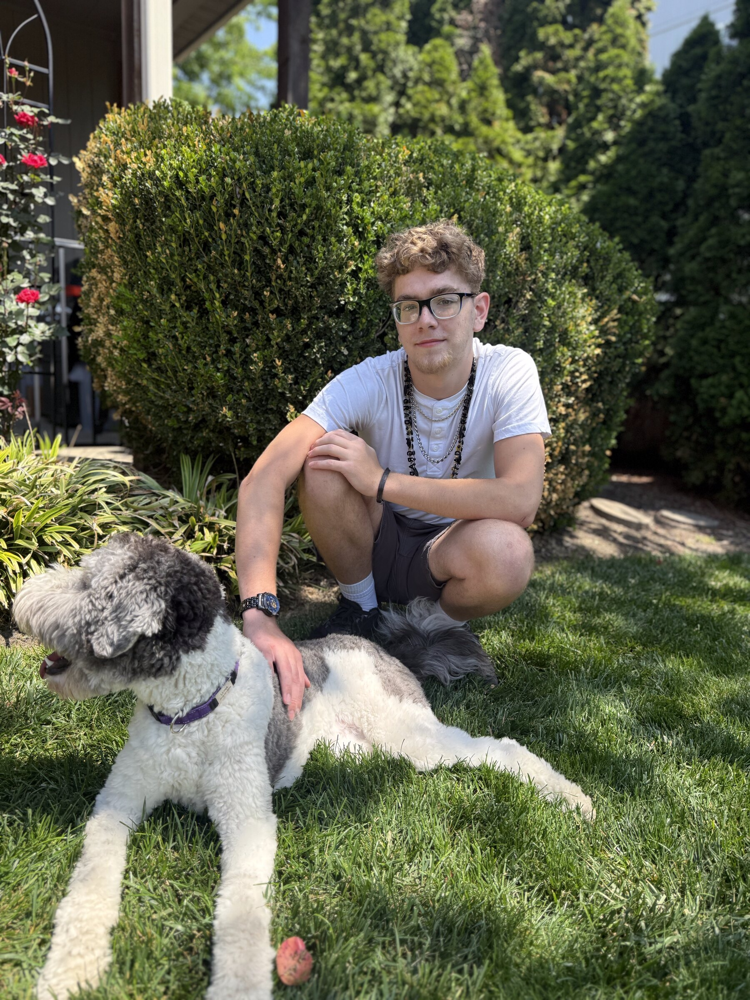

One designs systems. The other has spent a lifetime navigating them.
This is not a story about fixing anyone. It is a story about what happens when a father who builds systems for a living spends eighteen years learning from a son who was never going to fit inside them.

Foster care found us before we found him.
Ethan came into our family at five and a half. Quiet, watchful, already carrying more than a child should. There is a particular kind of attention a foster child brings into a room — the attention of a person who has learned, very young, that the world is not always safe.
We were not prepared. No one is, despite the trainings and the binders and the home study. What we were given instead was time. Time, and a slow recognition that this small person was going to teach us more than we would ever teach him.
The diagnoses came in a language we had to learn.
Autism. Intellectual and developmental disability. Trauma. Each word arrived with a paperwork trail and a waiting list and a person on the other end of a phone who had not met our son. Each word, also, was true — and incomplete.
Because Ethan is not his diagnoses. He is the boy who notices the dog before he notices the room. He is the teenager who asks if you are okay before you have noticed that you are not. He is, increasingly, a young man — and the world is going to have to make room for that.
Adulthood is a system, too.
The cliff arrives the day school ends. Services thin. The paperwork starts over. There are a thousand decisions about housing and work and friendship and money, and most of them are made in rooms our children are not invited into.
This is where we are. Telling the truth about it — on stages, on microphones, in classrooms, in churches, in agencies. Because the people who design what comes next deserve to hear from the people who will live inside it.